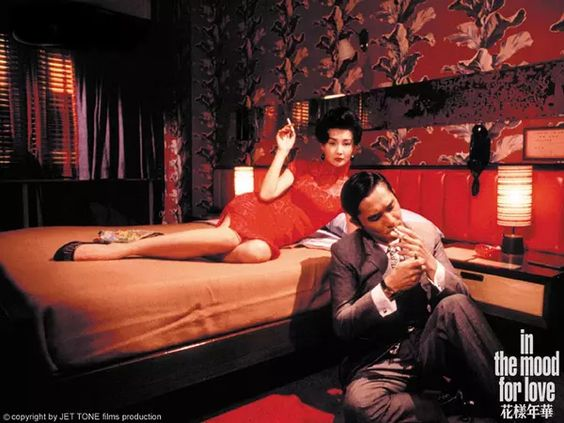
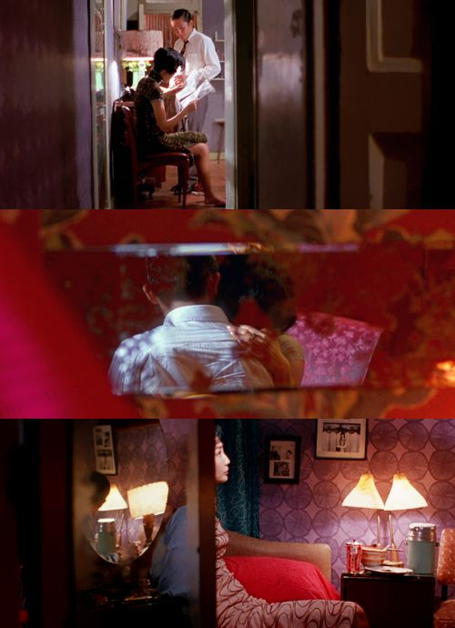
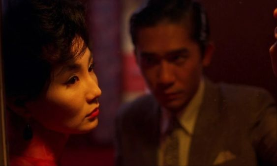

A GAMBLE OF LOVE
In the company of one another, love remains elusive; while those in love find it challenging to coexist.
Set in 1960s Hong Kong, the film follows two neighbors, Mr. Chow and Mrs. Chan, who suspect their spouses of infidelity. As they spend more time together, they form a close bond, sharing their loneliness and emotional turmoil. However, they are determined not to become like their unfaithful partners and maintain their moral integrity.
The film delves into the complexity of multiple identities as Mr. Chow and Mrs. Chan adopt the roles of "husband" and "wife" while trying to uncover the truth about their spouses' affair. This duality of roles reflects their inner conflict between their growing affection for each other and their commitment to their marriage vows.
Repression and restraint are central themes as both characters suppress their desires and feelings. Their love remains unspoken and unfulfilled, adding a layer of poignant intensity to the narrative. The film beautifully captures their inner turmoil through its exquisite cinematography and evocative music.
The contrast between black and white and color cinematography serves as a visual metaphor for the characters' emotional states. The scenes in black and white represent the characters' daily lives, filled with routine and restraint. In contrast, the few color sequences depict their fantasies and unfulfilled desires, emphasizing the vividness of their hidden emotions.
"In the Mood for Love" is a masterful exploration of love, longing, and the complexities of human relationships, all wrapped in Wong Kar-wai's signature visual and emotional storytelling style.


